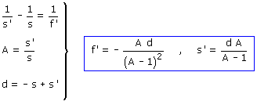
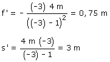

a) Datos: A = -3 Incógnitas: s, s', f' La distancia objeto-lente es: -s y la distancia lente-pantalla
vale s', entonces sabemos que: Ecuaciones de la lente:   La distancia focal de la lente es positiva por tanto dicha lente será convergente. La lente deberá estar a 3 m de la pantalla y a 1 m del objeto |